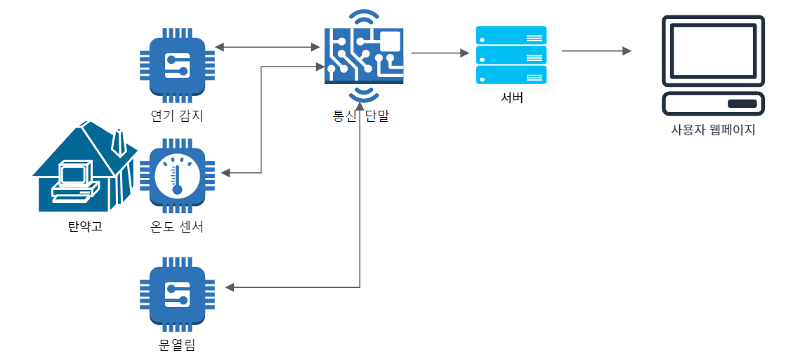

공군 탄약고 화재 통합 단말
1. 제품 이미지

2. 주요 기능
공군 탄약고에 설치되는 문열림 연기 감지 온습도 단말. Rs485센서를 사용하여 넓은 공군 탄약고에 설치된 각종 센서 데이터를 서버로 전송
3. 아키텍처 다이어그램
4. 나의 역할 :
- 이벤트 관리 시스템 구축 → 연기 센서와 온도 센서를 통한 화재 상황 이벤트를 관리하고, bitset으로 이벤트 관리 이전의 이벤트와 현재 상황 비교
- 온도 센서 추가 → 신규 Rs485 센서 추가
5. 결과 및 효과
- 공군 탄약고 화재 감시 시스템 활용, 탄약고의 온도와 습도를 확인하여 화재 예방